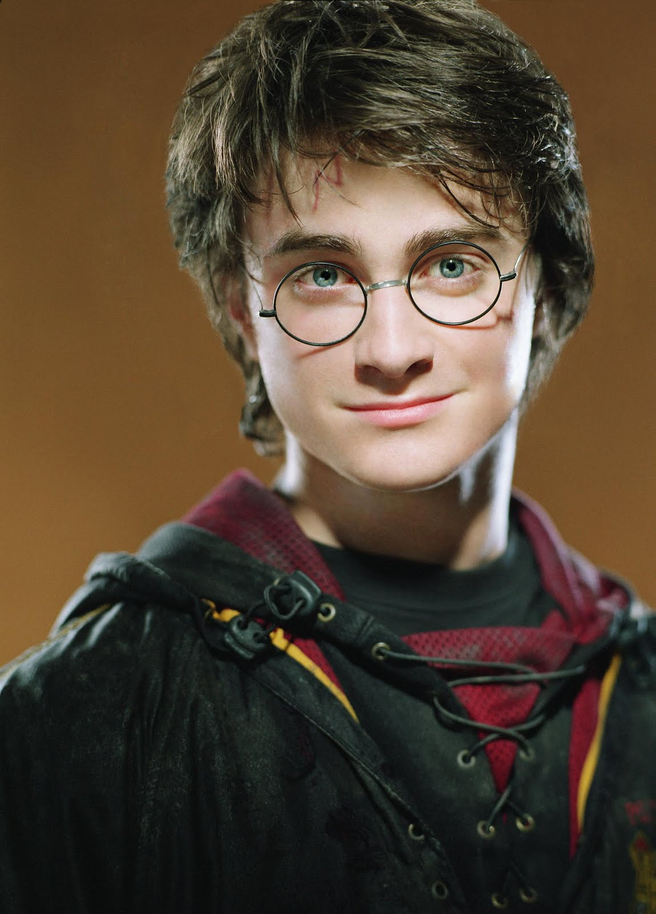

Harry Tiago Potter é um bruxo inglês mestiço nascido em 31 de julho de 1980[1]. O único filho de Tiago e Lílian Potter teve seu nascimento ofuscado por uma profecia que referia-se a si mesmo, ou a Neville Longbottom, como aquele com o poder de derrotar o Lorde das Trevas. Harry foi estabelecido como alvo após Severo Snape delatar toda a previsão a Voldemort, notando-se que havia algumas semelhanças entre a criança e o Lorde das Trevas. Voldemort fez sua primeira tentativa de contornar a profecia quando Harry possuía um ano e três meses de idade. Durante o conflito, ele assassinou Tiago e Lílian Potter que tentaram proteger seu único filho e teve a sua primeira queda consagrada pelas mãos de um bebê. Esta queda marcou o fim da Primeira Guerra Bruxa e fez com que Harry passasse a ser reconhecido como "O Menino que Sobreviveu"[5], uma vez sendo o único bruxo conhecido que havia sobrevivido a uma Maldição da Morte. Seguindo as palavras da profecia, o atentado também serviu para estabelecer Harry de vez como o inimigo principal de Voldemort, e não o jovem Longbottom. Em decorrência do sacrifício amoroso de sua mãe, Harry se tornou órfão e teve de ser criado por seu único parente de sangue restante, sua tia trouxa Petúnia Dursley. Enquanto estivesse sob a sua tutela, ele estaria protegido do Lorde das Trevas devido ao feitiço de laço sanguíneo que Alvo Dumbledore havia colocado sobre ele[56]. Esta magia garantia a sua proteção até a maioridade, ou, se caso ele viesse a se mudar da casa de sua tia permanentemente. Dado ao ressentimento e desdém de Petúnia por sua irmã e suas habilidades mágicas, Harry cresceu sendo abusado e negligenciado. Pouco antes do décimo primeiro aniversário de Harry, a Escola de Magia e Bruxaria de Hogwarts realiza várias tentativas para entregar-lhe uma carta contendo sua admissão escolar e explicando toda a sua herança mágica. No entanto, embora Valter Dursley tenha negado todas elas e tomado a decisão de fugir temporariamente de sua residência para cessar o envio, é Rúbeo Hagrid quem então aparece e conta a Harry que ele é um bruxo[57]. No outro dia, o jovem é acompanhado pelo meio-gigante ao Beco Diagonal para a compra de seu material escolar. Harry inicia sua educação em Hogwarts em 1991 e é classificado para a Casa Grifinória — embora houvesse tentativas do Chapéu Seletor em levá-lo à Casa Sonserina inicialmente. Se tornando o melhor amigo de Rony Weasley e Hermione Granger, Harry também alcança a proeza de ser o apanhador mais jovem do século ao entrar para o time de quadribol de sua casa e, adiante, em seu sexto ano letivo, o capitão do time, chegando até a ganhar duas Taça de Quadribol[58]. Durante toda a sua educação academia, Harry foi atormentado de algum jeito por Lorde Voldemort. Em seus primeiros anos, ele é capaz de proteger a Pedra Filosofal, adentrar a Câmara Secreta, matar um basilisco milenar, impedir o assassinato de Gina Wealsey e, aos trezes anos, a conjurar a forma corpórea de um Patrono. Já em seu quarto ano letivo, Harry é colocado no Torneio Tribruxo contra a sua vontade, convive com um Comensal da Morte disfarçado usualmente durante meses e testemunha cara a cara a morte de seu amigo Cedrico Diggory pelas mãos de Voldemort. No ano letivo seguinte, ele é psicologicamente abalado do início ao fim tendo de assumir o cargo de professor de Defesa Contra as Artes das Trevas de vários estudantes de todas as idades em sigilo, lidar com a negligencia e abuso da então funcionária designada pelo Ministério Dolores Umbridge, ser humilhado cotidianamente e ser estabelecido como mentiroso e maluco, além de lutar aos quinze anos em uma batalha no Departamento de Mistérios e perder uma pessoa próxima uma outra vez. Harry encerra seus estudos em Hogwarts em 1997, dando início a uma busca pelas Horcruxes de Voldemort. Ele também desempenhou um papel significativo em muitas outras batalhas da Segunda Guerra Bruxa, em especial a Batalha de Hogwarts, seu confronto final com o Lorde das Trevas e onde ele testemunha a morte de muitos amigos e entes queridos. Em sua jornada, Harry também foi denominado o Mestre da Morte por possuir as três Relíquias da Morte simultaneamente com apenas dezessete anos. Já após a guerra, ele se casa com Gina Weasley e possui três filhos: Tiago, Alvo e Lílian. Ele também segue uma carreira promissora como Auror, tendo ajudado na reformulação do Ministério da Magia em vários âmbitos[51]. Em 2007, foi apontado como chefe da Seção dos Aurores aos 26 anos, e ocasionalmente dava palestras sobre o assunto em Hogwarts[50]. No verão de 2020, Harry se torna o chefe do Departamento de Execução das Leis da Magia[52]. Ele também é padrinho de Eduardo Lupin.
voltar